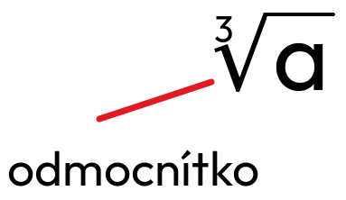

Třetí odmocnina je matematická operace, která hledá číslo, jež při umocnění na třetí dává původní hodnotu. Například třetí odmocnina z 27 je 3, protože 3³ = 27. Tento pojem se často využívá při výpočtech objemů těles, jako jsou koule nebo krychle. Třetí odmocnina je základní matematický nástroj, který se používá v různých oblastech matematiky.
Krychlové číslo - přirozené číslo, které je 3. mocninou nějakého přirozeného čísla (např. 1, 8, 27, 64).
(b³ = a) = = b
Třetí odmocnina existuje i pro záporná čísla.
= -3
-3 × -3 × -3 = -27
Třetí odmocnina může být kladná, záporná nebo nula, podle hodnoty čísla pod odmocninou.
= 2
protože 2 × 2 × 2 = 8.
= ×
= 30
= 0,1